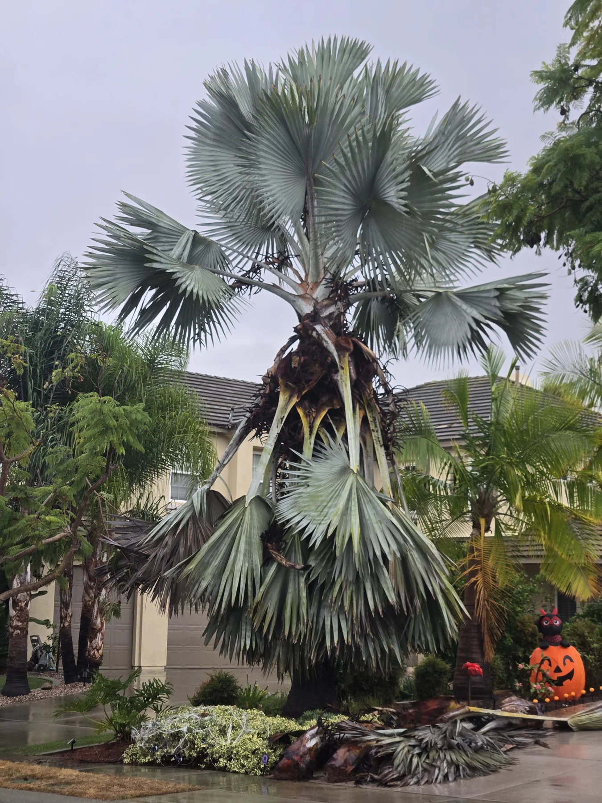
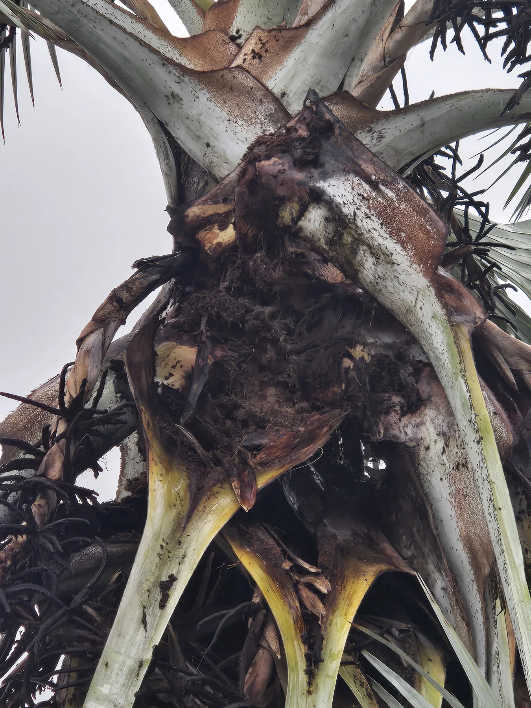
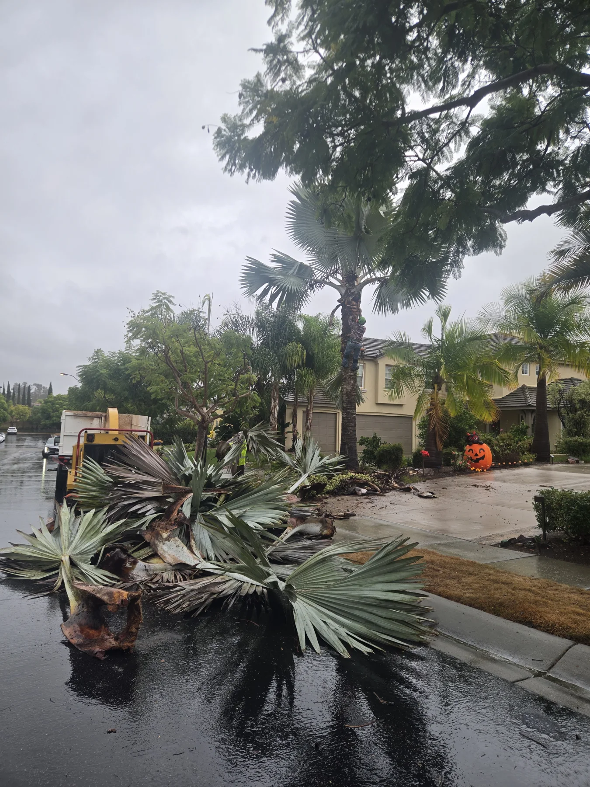
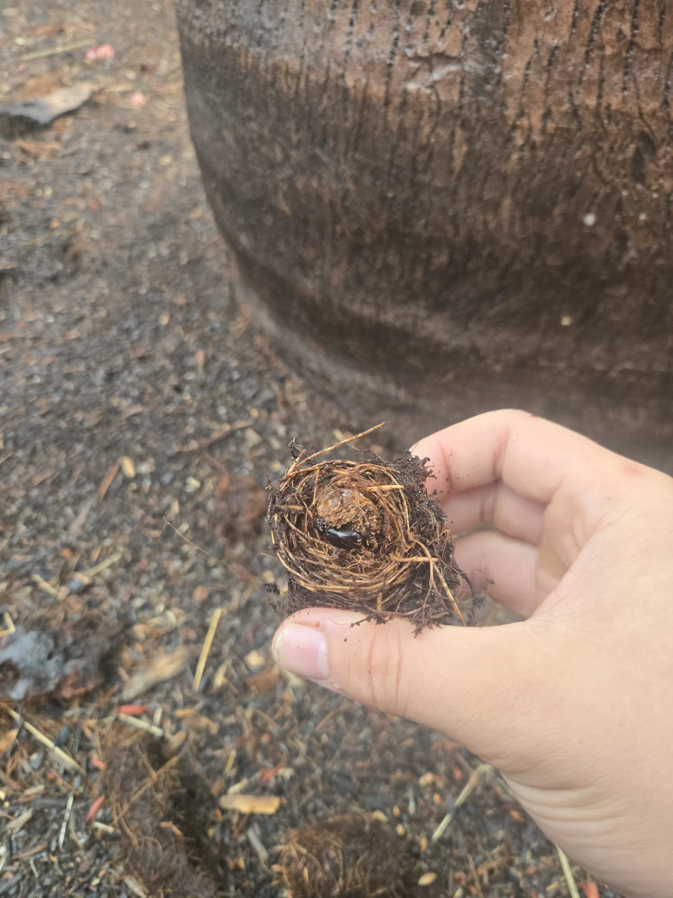
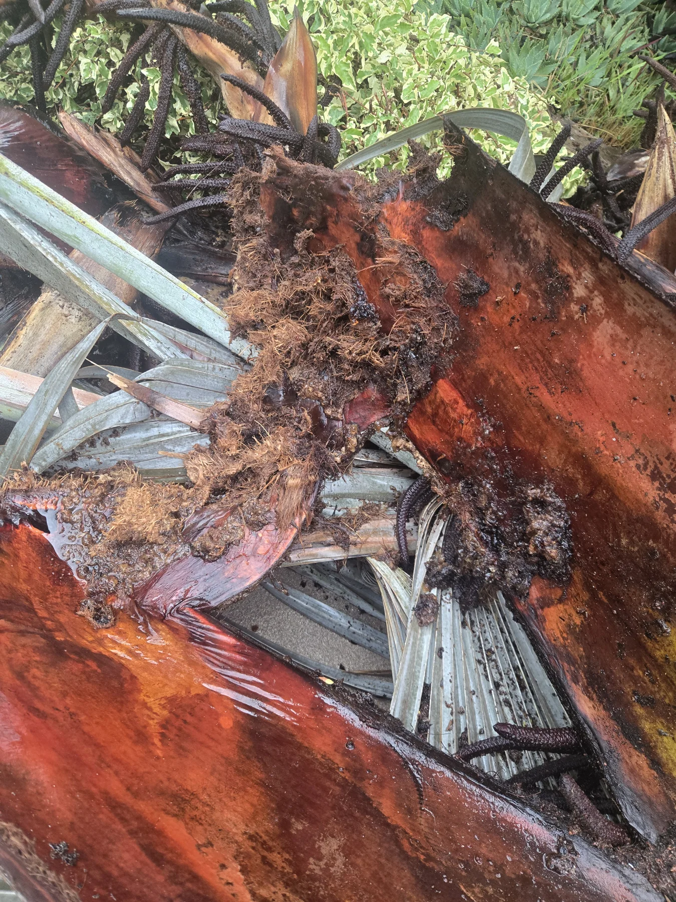

On October 11, SDPP coordinated its first palm removal: a weevil-infested Bismarck in Black Mountain Ranch. I documented the palm before and during the work, including the damage and weevil evidence found inside.
Before the removal, much of its silver crown was still visible. Lower leaves were hanging down, and closer views showed badly damaged tissue around the leaf bases. From a distance, the remaining canopy did not tell the whole story.

A closer look before removal
I photographed the crown, the damaged leaf bases, and material around the trunk. The close views matter here. They preserve what was visible before the palm was cut into sections.

The removal
Danny Juarez Tree Service took the palm down and began breaking it into manageable sections. SDPP coordinated the removal and documented the palm as the interior became accessible.
This was a removal, not a treatment success story. The record follows the loss of this individual palm and the evidence that became visible during the job.

What we found inside
The cut material exposed damaged tissue, fibrous cocoons, and weevil larvae. I recorded those details while the palm was being sectioned. The clips below show the interior and one larva in place.


Why I kept this record
This first SDPP removal gave me a close look at weevil damage in a Bismarck palm. I wanted more than a photograph of the palm before it disappeared. The sequence connects the standing palm, the removal, and the material found inside it.
These are field observations from this palm. They do not establish a laboratory identification of the weevil species or tell us the condition of every nearby palm. They do show why a remaining canopy can be an incomplete view of what is happening inside.
Ask SDPP about a declining palm · Palm and tree removal services